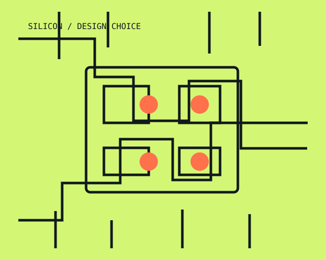
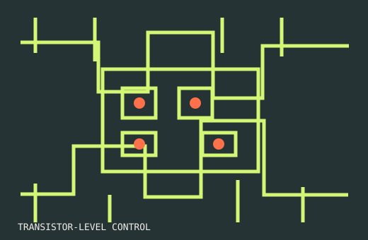
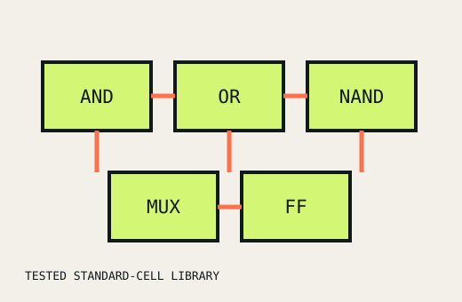
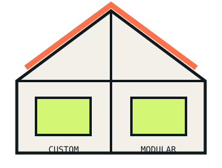

FULL CUSTOM
Build from the transistor up.
Detailed control of individual transistors and physical layout, designed specifically for demanding requirements.
- Maximum optimisation
- Fine-grained control
- More time and expertise
VLSI DESIGN · CCE1 TECHNICAL ACTIVITY
Which one is better? The honest answer: neither is universally better. The right choice depends on what the chip needs to achieve.
Explore the trade-offs ↓
01 / THE DESIGN DECISION
Integrated circuits are at the heart of smartphones, laptops, cars and medical equipment. They bring millions or billions of electronic components together on a tiny piece of silicon.
Two common design approaches are Full Custom IC Design and Semi-Custom IC Design. Full custom prioritises control and optimisation; semi-custom prioritises development time and cost.
02 / AT A GLANCE
FULL CUSTOM
Detailed control of individual transistors and physical layout, designed specifically for demanding requirements.
SEMI-CUSTOM
Pre-designed standard cells are combined and customised to create the required digital circuit.
03 / FULL CUSTOM IC DESIGN
Full custom IC design means designing the circuit almost completely from scratch. Engineers decide how individual transistors and physical layout are placed and connected.

THE DESIGNER CAN OPTIMISE
Transistor placementChip areaPower consumptionSpeedSignal pathsPerformanceOverall layoutADVANTAGES
LIMITATIONS
It is usually chosen when the benefits of optimisation are worth the additional effort.
04 / SEMI-CUSTOM IC DESIGN
Rather than designing every component from scratch, engineers use pre-designed and tested building blocks such as standard cells, then customise the design for the application.

Think LEGO blocks. The pieces are already tested. Instead of manufacturing every piece yourself, you arrange the available pieces into the structure you need.
ADVANTAGES
LIMITATIONS
These limitations are often acceptable because semi-custom saves significant time and effort.
05 / WHAT CHANGES THE ANSWER?
At transistor and layout level, even small full-custom changes can require substantial analysis and verification. Pre-tested semi-custom components let designers focus on how blocks work together—valuable under strict product deadlines.
Full custom needs more design, verification and layout effort. Semi-custom lowers development costs through reusable cells. Manufacturing cost is separate: at very high volume, a smaller, power-efficient full-custom chip can still make economic sense.
For every last bit of speed, full custom has the advantage because transistor sizing, topology and layout can be optimised. Modern standard-cell libraries can perform excellently, but offer less fine-grained control.
Full custom can be tailored for aggressive low-power operation. Semi-custom can also be efficient, but works within the characteristics of the available cells.
06 / WHERE ARE THEY USED?
FULL CUSTOM
SEMI-CUSTOM
In practice, modern chips may use a combination of approaches rather than being purely full custom or purely semi-custom.
07 / AN EVERYDAY ANALOGY
With a full custom approach, you decide the size, shape, materials, wiring, rooms and layout. You gain maximum freedom, but it costs more time and money.
With a semi-custom approach, you start with standard building components and modify them for your needs. The house still fits its purpose, without creating every component from scratch.
Full custom = maximum control and optimisation.
Semi-custom = faster, more economical development.

08 / SO, WHICH ONE IS BETTER?
If maximum performance, minimum power consumption and minimum chip area are the main goals, full custom can be the better option. If reducing development time and cost while achieving good performance is the priority, semi-custom is usually more practical.
CHOOSE FULL CUSTOM WHEN
CHOOSE SEMI-CUSTOM WHEN
They are two ways of balancing optimisation, cost, flexibility and development time.